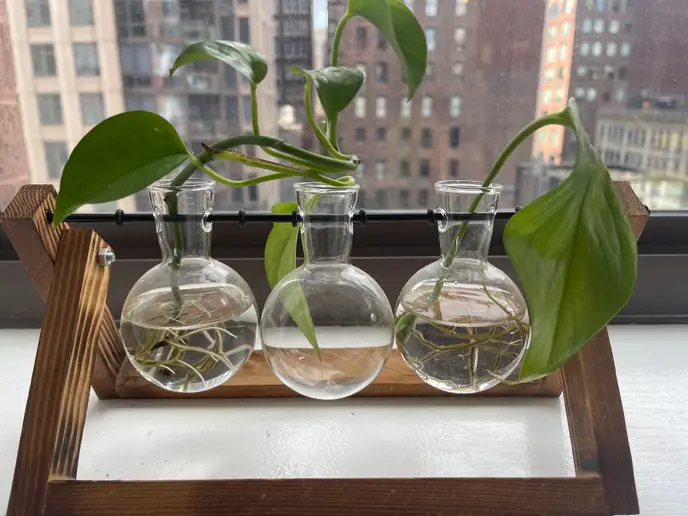

Propagating Pothos: A Beginner’s Guide
Propagating pothos is one of the easiest ways to grow your houseplant collection. Take a healthy stem with at least two nodes, snip below a node, and place it in a glass of water. Within two to four weeks, roots will form, ready for potting. "Pothos are forgiving and perfect for beginners," says gardening expert Sarah Lee. This method is gaining popularity in 2025 as plant lovers share their propagation successes online.
Source: Adapted from "How to Propagate Pothos in Water," Greg.app, accessed June 22, 2025, https://greg.app/blog/pothos/how-to-propagate-pothos-in-water/.